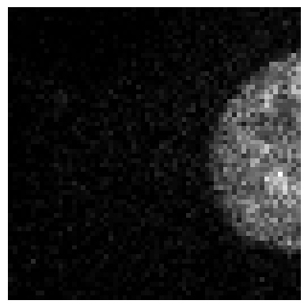

a = BioImage.create('data_examples/example_tiff.tiff')
print(a.shape)torch.Size([1, 96, 512, 512])MetaResolver (*args, **kwargs)
*A class to bypass metaclass conflict: https://pytorch-geometric.readthedocs.io/en/latest/_modules/torch_geometric/data/batch.html*
BioImageBase (*args, **kwargs)
A class that represents an image object. Metaclass casts x to this class if it is of type cls._bypass_type.
BioImage (*args, **kwargs)
Subclass of BioImageBase that represents 2D and 3D image objects.
BioImageStack (*args, **kwargs)
Subclass of BioImageBase that represents a 3D image object.
torch.Size([1, 96, 512, 512])BioImageProject (*args, **kwargs)
Subclass of BioImageBase that represents a 3D image stack as a 2D image object using maximum intensity projection.
BioImageMulti (*args, **kwargs)
Subclass of BioImageBase that represents a multi-channel 2D image object.
Tensor2BioImage (cls:__main__.BioImageBase=<class '__main__.BioImageStack'>)
A transform with a __repr__ that shows its attrs
BioImageBlock (cls:__main__.BioImageBase=<class '__main__.BioImage'>)
A TransformBlock for images of cls
BioDataBlock (blocks:list=(<fastai.data.block.TransformBlock object at 0x7f34c202a650>, <fastai.data.block.TransformBlock object at 0x7f33d120c9d0>), dl_type:fastai.data.core.TfmdDL=None, get_items=<function get_image_files>, get_y=None, get_x=None, getters:list=None, n_inp:int=None, item_tfms:list=None, batch_tfms:list=None, **kwargs)
Generic container to quickly build Datasets and DataLoaders.
| Type | Default | Details | |
|---|---|---|---|
| blocks | list | (<fastai.data.block.TransformBlock object at 0x7f34c202a650>, <fastai.data.block.TransformBlock object at 0x7f33d120c9d0>) | One or more TransformBlocks |
| dl_type | TfmdDL | None | Task specific TfmdDL, defaults to block’s dl_type orTfmdDL |
| get_items | function | get_image_files | |
| get_y | NoneType | None | |
| get_x | NoneType | None | |
| getters | list | None | Getter functions applied to results of get_items |
| n_inp | int | None | Number of inputs |
| item_tfms | list | None | ItemTransforms, applied on an item |
| batch_tfms | list | None | Transforms or RandTransforms, applied by batch |
| kwargs |
get_dataloader (data_source, show_summary:bool=False, **kwargs)
*Create and return a DataLoader from a BioDataBlock using provided keyword arguments.
Args: data_source (any): The source of the data to be loaded by the dataloader. This can be any type that is compatible with the dataloading method specified in kwargs (e.g., paths, datasets). show_summary (bool, optional): If True, print a summary of the BioDataBlock after creation. Default is False. **kwargs: Additional keyword arguments to configure the DataLoader and BioDataBlock. Supported keys include: ‘blocks’, ‘dl_type’, ‘get_items’, ‘get_y’, ‘get_x’, ‘getters’, ‘n_inp’, ‘item_tfms’, ‘batch_tfms’.
Returns: DataLoader: A PyTorch DataLoader object populated with the data from the BioDataBlock. If show_summary is True, it also prints a summary of the datablock after creation.
Example: >>> dataloader = get_dataloader(data_path, show_summary=True, blocks=‘train’, dl_type=‘ImageDataLoader’)*
Get the ground truth images located in a folder called ‘gt’ and divided in labeled subfolders.
These function are tailor-made for some test datasets, eventually they must be changed/adapted to more general cases
get_gt (path_gt, gt_file_name='avg50.png')
*Constructs a path to a ground truth file based on the given path_gt and gt_file_name.
This function uses a lambda function to create a new path by appending gt_file_name to the parent directory of the input file, as specified by path_gt.
Parameters: path_gt (str or Path): The base directory where the ground truth files are stored, or a file path from which to derive the parent directory. gt_file_name (str, optional): The name of the ground truth file. Defaults to “avg50.png”.
Returns: callable: A function that takes a single argument (a filename) and returns a Path object representing the full path to the ground truth file. When called with a filename, this function constructs the path by combining path_gt or the parent directory of the filename with gt_file_name.
Example: If you have a file path like “./data/images/123/image.png” and you want to find the corresponding ground truth file, you might call get_gt(“./data/gt_images”)(path). This would return a Path object pointing to “./data/gt_images/123/avg50.png”.*
get_target (path, same_filename=True, target_file_prefix='target', signal_file_prefix='signal')
*Constructs and returns functions for generating file paths to “target” files based on given input parameters.
This function defines two nested helper functions within its scope:
- `construct_target_filename(file_name)`: Constructs a target file name by inserting the specified prefix into the original file name.
- `generate_target_path(file_name)`: Generates a path to the target file based on whether `same_filename` is set to True or False.The main function returns the appropriate helper function based on the value of same_filename.
Parameters:
path (str): The base directory where the files are located. This should be a string representing an absolute or relative path.
same_filename (bool, optional): If True, the target file name will match the original file name; otherwise, it will use the specified prefix. Defaults to True.
target_file_prefix (str, optional): The prefix to insert into the target file name if `same_filename` is False. Defaults to "target".
signal_file_prefix (str, optional): The prefix used in the original file names that should be replaced by the target prefix. Defaults to "signal".Returns:
callable: A function that takes a file name as input and returns its corresponding target file path based on the specified parameters.*print(get_target('train_folder/target', same_filename=False)('../signal/signal01.tif'))
print(get_target('train_folder/target')('../signal/image01.tif'))train_folder/target/target01.tif
train_folder/target/image01.tifprint(get_target('train_folder', same_filename=False, target_file_prefix="cameraman_clean", signal_file_prefix="cameraman_noisy")('../signal/cameraman_noisy.tif'))train_folder/cameraman_clean.tifGet as ground truth another noisy image randomly chosen in the same folder as the input image
get_noisy_pair (fn)
*Get another “noisy” version of the input file by selecting a file from the same directory.
This function first retrieves all image files in the directory of the input file fn (excluding subdirectories). It then selects one of these files at random, ensuring that it is not the original file itself to avoid creating a trivial “noisy” pair.
Parameters:
fn (Path or str): The path to the original image file. This should be a Path object but accepts string inputs for convenience.Returns:
Path: A Path object pointing to the selected noisy file.*show_batch (x:BioImageBase, y:BioImageBase, samples, ctxs=None, max_n:int=10, nrows:int=None, ncols:int=None, figsize:tuple=None, **kwargs)
Display a batch of images and their corresponding labels.
Returns: List[Context]: A list of contexts after displaying the images and labels.
| Type | Default | Details | |
|---|---|---|---|
| x | BioImageBase | The input image data. | |
| y | BioImageBase | The target label data. | |
| samples | List of sample indices to display. | ||
| ctxs | NoneType | List of contexts for displaying images. If None, create new ones using get_grid(). |
|
| max_n | int | 10 | Maximum number of samples to display. |
| nrows | int | None | Number of rows in the grid if ctxs are not provided. |
| ncols | int | None | Number of columns in the grid if ctxs are not provided. |
| figsize | tuple | None | Figure size for the image display. |
| kwargs | Additional keyword arguments. |
show_results (x: BioImageBase, y: BioImageBase, samples, outs, ctxs=None, max_n=10, figsize=None, **kwargs)
Display a batch of input images along with their predicted and target labels.
Returns:
List[Context]: A list of contexts after displaying the images and labels.
| Type | Default | Details | |
|---|---|---|---|
| x | BioImageBase | The input image data. | |
| y | BioImageBase | The target label data. | |
| samples | List of sample indices to display. | ||
| outs | List of output predictions corresponding to the samples. | ||
| ctxs | NoneType | List of contexts for displaying images. If None, create new ones using get_grid(). |
|
| max_n | int | 10 | |
| figsize | tuple | None | Figure size for the image display. |
| kwargs | Additional keyword arguments. |
extract_patches (data, patch_size, overlap)
*Extracts n-dimensional patches from the input data.
Parameters: - data: numpy array of the input data (n-dimensional). - patch_size: tuple of integers defining the size of the patches in each dimension. - overlap: float (between 0 and 1) indicating overlap between patches.
Returns: - A list of patches as numpy arrays.*
save_patches_grid (data_folder, gt_folder, output_folder, patch_size, overlap)
*Loads n-dimensional data from data_folder and gt_folder, generates patches, and saves them into individual HDF5 files. Each HDF5 file will have datasets with the structure X/patch_idx and y/patch_idx.
Parameters: - data_folder: Path to the folder containing data files (n-dimensional data). - gt_folder: Path to the folder containing ground truth (gt) files (n-dimensional data). - output_folder: Path to the folder where the HDF5 files will be saved. - patch_size: tuple of integers defining the size of the patches. - overlap: float (between 0 and 1) defining the overlap between patches.*
data_folder = '/home/biagio/Code/Noise2Model/_data/Confocal_BPAE_B/raw/1'
gt_folder = '/home/biagio/Code/Noise2Model/_data/Confocal_BPAE_B/raw/1'
output_folder = './_test'
patch_size = (64,64)
overlap =0
save_patches_grid(data_folder, gt_folder, output_folder, patch_size, overlap)['HV110_P0500510000.png', 'HV110_P0500510001.png', 'HV110_P0500510002.png', 'HV110_P0500510003.png', 'HV110_P0500510004.png', 'HV110_P0500510005.png', 'HV110_P0500510006.png', 'HV110_P0500510007.png', 'HV110_P0500510008.png', 'HV110_P0500510009.png', 'HV110_P0500510010.png', 'HV110_P0500510011.png', 'HV110_P0500510012.png', 'HV110_P0500510013.png', 'HV110_P0500510014.png', 'HV110_P0500510015.png', 'HV110_P0500510016.png', 'HV110_P0500510017.png', 'HV110_P0500510018.png', 'HV110_P0500510019.png', 'HV110_P0500510020.png', 'HV110_P0500510021.png', 'HV110_P0500510022.png', 'HV110_P0500510023.png', 'HV110_P0500510024.png', 'HV110_P0500510025.png', 'HV110_P0500510026.png', 'HV110_P0500510027.png', 'HV110_P0500510028.png', 'HV110_P0500510029.png', 'HV110_P0500510030.png', 'HV110_P0500510031.png', 'HV110_P0500510032.png', 'HV110_P0500510033.png', 'HV110_P0500510034.png', 'HV110_P0500510035.png', 'HV110_P0500510036.png', 'HV110_P0500510037.png', 'HV110_P0500510038.png', 'HV110_P0500510039.png', 'HV110_P0500510040.png', 'HV110_P0500510041.png', 'HV110_P0500510042.png', 'HV110_P0500510043.png', 'HV110_P0500510044.png', 'HV110_P0500510045.png', 'HV110_P0500510046.png', 'HV110_P0500510047.png', 'HV110_P0500510048.png', 'HV110_P0500510049.png']Processing files: 100%|██████████| 50/50 [00:01<00:00, 36.83it/s]
extract_random_patches (data, patch_size, num_patches)
*Extracts a specified number of random n-dimensional patches from the input data.
Parameters: - data: numpy array of the input data (n-dimensional). - patch_size: tuple of integers defining the size of the patches in each dimension. - num_patches: number of random patches to extract.
Returns: - A list of randomly cropped patches as numpy arrays.*
save_patches_random (data_folder, gt_folder, output_folder, patch_size, num_patches)
*Loads n-dimensional data from data_folder and gt_folder, generates random patches, and saves them into individual HDF5 files. Each HDF5 file will have datasets with the structure X/patch_idx and y/patch_idx.
Parameters: - data_folder: Path to the folder containing data files (n-dimensional data). - gt_folder: Path to the folder containing ground truth (gt) files (n-dimensional data). - output_folder: Path to the folder where the HDF5 files will be saved. - patch_size: tuple of integers defining the size of the patches. - num_patches: number of random patches to extract per file.*
data_folder = '/home/biagio/Code/Noise2Model/_data/Confocal_BPAE_B/raw/1'
gt_folder = '/home/biagio/Code/Noise2Model/_data/Confocal_BPAE_B/raw/1'
output_folder = './_test2'
patch_size = (64,64,1)
num_patches= 2
save_patches_random(data_folder, gt_folder, output_folder, patch_size, num_patches)Processing files: 100%|██████████| 50/50 [00:00<00:00, 55.37it/s]